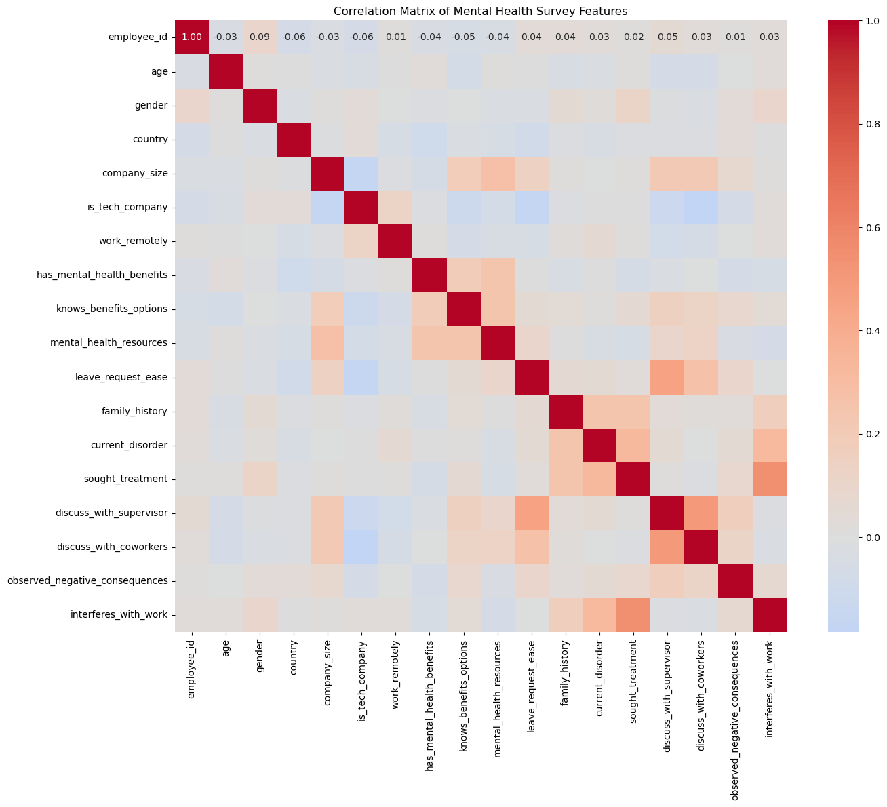

Model Development#
This section details the model selection process and initial training procedures. Navigate: Previous (Data Preparation) | Next (Feature Engineering)
#Splitting to training and testing data
import sqlite3
import pandas as pd
import numpy as np
from sklearn.model_selection import train_test_split
import matplotlib.pyplot as plt
import seaborn as sns
# Connect and get comprehensive data
conn = sqlite3.connect('mental_health_final.db')
query = """
SELECT
e.employee_id,
e.age,
e.gender,
e.country,
emp.company_size,
emp.is_tech_company,
emp.work_remotely,
mhb.has_mental_health_benefits,
mhh.current_disorder,
mhh.sought_treatment,
wc.discuss_with_supervisor
FROM employees e
LEFT JOIN employment emp ON e.employee_id = emp.employee_id
LEFT JOIN mental_health_benefits mhb ON e.employee_id = mhb.employee_id
LEFT JOIN mental_health_history mhh ON e.employee_id = mhh.employee_id
LEFT JOIN workplace_communication wc ON e.employee_id = wc.employee_id
"""
df = pd.read_sql_query(query, conn)
conn.close()
# Explore potential target variables distribution
print("\nDistribution of key variables:")
print("\nCurrent Mental Health Disorder:")
print(df['current_disorder'].value_counts(normalize=True))
print("\nSought Treatment:")
print(df['sought_treatment'].value_counts(normalize=True))
print("\nTech Company Distribution:")
print(df['is_tech_company'].value_counts(normalize=True))
# Check gender distribution
print("\nGender Distribution:")
print(df['gender'].value_counts(normalize=True))
# Check country distribution
print("\nCountry Distribution:")
print(df['country'].value_counts(normalize=True))
# Visualize distributions
plt.figure(figsize=(15, 10))
# Plot 1: Current Disorder Distribution
plt.subplot(2, 2, 1)
sns.countplot(data=df, x='current_disorder')
plt.title('Distribution of Current Mental Health Disorder')
plt.xticks(rotation=45)
# Plot 2: Sought Treatment Distribution
plt.subplot(2, 2, 2)
sns.countplot(data=df, x='sought_treatment')
plt.title('Distribution of Treatment Seeking')
plt.xticks(rotation=45)
# Plot 3: Tech Company Distribution
plt.subplot(2, 2, 3)
sns.countplot(data=df, x='is_tech_company')
plt.title('Distribution of Tech vs Non-Tech Companies')
plt.xticks(rotation=45)
# Plot 4: Gender Distribution
plt.subplot(2, 2, 4)
sns.countplot(data=df, y='gender')
plt.title('Gender Distribution')
plt.tight_layout()
plt.show()
# Based on exploration, we'll use 'sought_treatment' as target variable
# and stratify by this and gender to maintain distributions
# Prepare features and target
X = df.drop(['employee_id', 'sought_treatment'], axis=1)
y = df['sought_treatment']
# Handle categorical variables
categorical_cols = ['gender', 'country', 'company_size', 'work_remotely',
'has_mental_health_benefits', 'current_disorder',
'discuss_with_supervisor']
# Create dummy variables
X = pd.get_dummies(X, columns=categorical_cols, drop_first=True)
# Perform train-test split with stratification
X_train, X_test, y_train, y_test = train_test_split(
X, y,
test_size=0.2,
random_state=42,
stratify=y
)
# Verify stratification
print("\nTraining set distribution:")
print(y_train.value_counts(normalize=True))
print("\nTest set distribution:")
print(y_test.value_counts(normalize=True))
# Save the splits
print("\nDataset shapes:")
print(f"X_train: {X_train.shape}")
print(f"X_test: {X_test.shape}")
print(f"y_train: {y_train.shape}")
print(f"y_test: {y_test.shape}")
Distribution of key variables:
Current Mental Health Disorder:
current_disorder
Yes 0.426150
No 0.352704
Maybe 0.221146
Name: proportion, dtype: float64
Sought Treatment:
sought_treatment
1 0.610977
0 0.389023
Name: proportion, dtype: float64
Tech Company Distribution:
is_tech_company
1 0.808717
0 0.191283
Name: proportion, dtype: float64
Gender Distribution:
gender
Male 0.424536
male 0.157385
Female 0.114609
female 0.073446
M 0.058918
...
cis male 0.000807
Human 0.000807
Genderfluid 0.000807
Enby 0.000807
MALE 0.000807
Name: proportion, Length: 67, dtype: float64
Country Distribution:
country
United States of America 0.677966
United Kingdom 0.145278
Canada 0.062954
Germany 0.046812
Netherlands 0.038741
Australia 0.028249
Name: proportion, dtype: float64
Training set distribution:
sought_treatment
1 0.610494
0 0.389506
Name: proportion, dtype: float64
Test set distribution:
sought_treatment
1 0.612903
0 0.387097
Name: proportion, dtype: float64
Dataset shapes:
X_train: (991, 87)
X_test: (248, 87)
y_train: (991,)
y_test: (248,)
#Yprofile and correlation matrix
import sqlite3
import pandas as pd
import numpy as np
import seaborn as sns
import matplotlib.pyplot as plt
from ydata_profiling import ProfileReport
# Get data from database
conn = sqlite3.connect('mental_health_final.db')
query = """
SELECT
e.employee_id,
e.age,
e.gender,
e.country,
emp.company_size,
emp.is_tech_company,
emp.work_remotely,
mhb.has_mental_health_benefits,
mhb.knows_benefits_options,
mhb.mental_health_resources,
mhb.leave_request_ease,
mhh.family_history,
mhh.current_disorder,
mhh.sought_treatment,
wc.discuss_with_supervisor,
wc.discuss_with_coworkers,
wc.observed_negative_consequences,
wc.interferes_with_work
FROM employees e
LEFT JOIN employment emp ON e.employee_id = emp.employee_id
LEFT JOIN mental_health_benefits mhb ON e.employee_id = mhb.employee_id
LEFT JOIN mental_health_history mhh ON e.employee_id = mhh.employee_id
LEFT JOIN workplace_communication wc ON e.employee_id = wc.employee_id
"""
df = pd.read_sql_query(query, conn)
conn.close()
# Generate YData Profile Report
profile = ProfileReport(df, title="Mental Health Survey Data Profiling Report")
profile.to_file("mental_health_profile_report.html")
# Create correlation matrix
# First, convert categorical variables to numeric
categorical_cols = df.select_dtypes(include=['object']).columns
for col in categorical_cols:
df[col] = pd.factorize(df[col])[0]
# Calculate correlation matrix
correlation_matrix = df.corr()
# Create correlation heatmap
plt.figure(figsize=(15, 12))
sns.heatmap(correlation_matrix,
annot=True,
cmap='coolwarm',
center=0,
fmt='.2f',
square=True)
plt.title('Correlation Matrix of Mental Health Survey Features')
plt.tight_layout()
plt.savefig('correlation_matrix.png')
plt.show()
# Print strongest correlations
print("\nStrongest Feature Correlations:")
corr_pairs = []
for i in range(len(correlation_matrix.columns)):
for j in range(i):
if i != j:
corr_pairs.append((
correlation_matrix.index[i],
correlation_matrix.columns[j],
correlation_matrix.iloc[i, j]
))
# Sort by absolute correlation value
corr_pairs.sort(key=lambda x: abs(x[2]), reverse=True)
# Print top 15 correlations
print("\nTop 15 Feature Correlations:")
for pair in corr_pairs[:15]:
print(f"{pair[0]} - {pair[1]}: {pair[2]:.3f}")
# Additional summary statistics for numerical variables
print("\nNumerical Variables Summary:")
print(df.describe())
# Distribution of key categorical variables
print("\nCategorical Variables Distribution:")
for col in categorical_cols:
print(f"\n{col} distribution:")
print(df[col].value_counts(normalize=True))

Strongest Feature Correlations:
Top 15 Feature Correlations:
interferes_with_work - sought_treatment: 0.552
discuss_with_coworkers - discuss_with_supervisor: 0.499
discuss_with_supervisor - leave_request_ease: 0.457
sought_treatment - current_disorder: 0.323
interferes_with_work - current_disorder: 0.315
mental_health_resources - company_size: 0.282
discuss_with_coworkers - leave_request_ease: 0.268
current_disorder - family_history: 0.249
mental_health_resources - knows_benefits_options: 0.247
mental_health_resources - has_mental_health_benefits: 0.243
sought_treatment - family_history: 0.242
discuss_with_supervisor - company_size: 0.218
discuss_with_coworkers - company_size: 0.214
knows_benefits_options - has_mental_health_benefits: 0.191
knows_benefits_options - company_size: 0.186
Numerical Variables Summary:
employee_id age gender country company_size \
count 1239.0000 1239.000000 1239.000000 1239.000000 1239.000000
mean 620.0000 34.576271 4.168684 1.240517 1.455206
std 357.8128 11.833885 9.238613 1.067332 1.482059
min 1.0000 3.000000 0.000000 0.000000 0.000000
25% 310.5000 28.000000 0.000000 1.000000 0.000000
50% 620.0000 33.000000 1.000000 1.000000 1.000000
75% 929.5000 39.000000 4.000000 1.000000 3.000000
max 1239.0000 323.000000 66.000000 5.000000 5.000000
is_tech_company work_remotely has_mental_health_benefits \
count 1239.000000 1239.000000 1239.000000
mean 0.808717 0.711057 1.992736
std 0.393470 0.829854 0.745983
min 0.000000 0.000000 0.000000
25% 1.000000 0.000000 2.000000
50% 1.000000 0.000000 2.000000
75% 1.000000 1.000000 2.000000
max 1.000000 2.000000 3.000000
knows_benefits_options mental_health_resources leave_request_ease \
count 1239.000000 1239.000000 1239.000000
mean 0.741727 0.692494 2.012914
std 0.833154 0.825600 1.612700
min 0.000000 0.000000 0.000000
25% 0.000000 0.000000 1.000000
50% 0.000000 0.000000 1.000000
75% 2.000000 1.000000 4.000000
max 2.000000 2.000000 5.000000
family_history current_disorder sought_treatment \
count 1239.000000 1239.000000 1239.000000
mean 0.862793 0.868442 0.610977
std 0.703485 0.746319 0.487726
min 0.000000 0.000000 0.000000
25% 0.000000 0.000000 0.000000
50% 1.000000 1.000000 1.000000
75% 1.000000 1.000000 1.000000
max 2.000000 2.000000 1.000000
discuss_with_supervisor discuss_with_coworkers \
count 1239.000000 1239.000000
mean 0.736077 0.731235
std 0.807226 0.855232
min 0.000000 0.000000
25% 0.000000 0.000000
50% 1.000000 0.000000
75% 1.000000 2.000000
max 2.000000 2.000000
observed_negative_consequences interferes_with_work
count 1239.000000 1239.000000
mean 0.069411 1.175948
std 0.254254 1.142385
min 0.000000 0.000000
25% 0.000000 0.000000
50% 0.000000 1.000000
75% 0.000000 2.000000
max 1.000000 4.000000
Categorical Variables Distribution:
gender distribution:
gender
0 0.424536
1 0.157385
3 0.114609
5 0.073446
4 0.058918
...
37 0.000807
38 0.000807
39 0.000807
40 0.000807
66 0.000807
Name: proportion, Length: 67, dtype: float64
country distribution:
country
1 0.677966
0 0.145278
2 0.062954
3 0.046812
4 0.038741
5 0.028249
Name: proportion, dtype: float64
company_size distribution:
company_size
0 0.399516
2 0.188055
3 0.171913
1 0.146086
4 0.054883
5 0.039548
Name: proportion, dtype: float64
work_remotely distribution:
work_remotely
0 0.530266
2 0.241324
1 0.228410
Name: proportion, dtype: float64
has_mental_health_benefits distribution:
has_mental_health_benefits
2 0.601291
3 0.221953
1 0.124294
0 0.052462
Name: proportion, dtype: float64
knows_benefits_options distribution:
knows_benefits_options
0 0.509282
2 0.251009
1 0.239709
Name: proportion, dtype: float64
mental_health_resources distribution:
mental_health_resources
0 0.541566
2 0.234060
1 0.224374
Name: proportion, dtype: float64
leave_request_ease distribution:
leave_request_ease
1 0.382567
0 0.149314
4 0.145278
2 0.130751
5 0.105730
3 0.086360
Name: proportion, dtype: float64
family_history distribution:
family_history
1 0.486683
0 0.325262
2 0.188055
Name: proportion, dtype: float64
current_disorder distribution:
current_disorder
1 0.426150
0 0.352704
2 0.221146
Name: proportion, dtype: float64
discuss_with_supervisor distribution:
discuss_with_supervisor
0 0.492333
1 0.279257
2 0.228410
Name: proportion, dtype: float64
discuss_with_coworkers distribution:
discuss_with_coworkers
0 0.535916
2 0.267151
1 0.196933
Name: proportion, dtype: float64
observed_negative_consequences distribution:
observed_negative_consequences
0 0.930589
1 0.069411
Name: proportion, dtype: float64
interferes_with_work distribution:
interferes_with_work
0 0.376110
2 0.263923
1 0.235674
3 0.084746
4 0.039548
Name: proportion, dtype: float64
#Dagshub and MLflow connection
import dagshub
dagshub.init(repo_owner='ashiashish100', repo_name='my-first-repo', mlflow=True)
Accessing as ashiashish100
Initialized MLflow to track repo "ashiashish100/my-first-repo"
Repository ashiashish100/my-first-repo initialized!
#Experiment 1
import sqlite3
import pandas as pd
import numpy as np
from sklearn.pipeline import Pipeline
from sklearn.compose import ColumnTransformer
from sklearn.preprocessing import StandardScaler, MinMaxScaler, FunctionTransformer
from sklearn.preprocessing import OneHotEncoder
from sklearn.linear_model import LogisticRegression
from sklearn.metrics import f1_score, confusion_matrix
from sklearn.model_selection import train_test_split
import mlflow
import mlflow.sklearn
import logging
# Configure MLflow to track experiments on DagsHub
mlflow.set_tracking_uri("https://dagshub.com/ashiashish100/my-first-repo.mlflow")
mlflow.set_experiment("mental_health_prediction")
# Set up logging
logging.basicConfig(level=logging.INFO)
logger = logging.getLogger(__name__)
def standardize_gender(df):
#Standardize gender categories
df = df.copy()
# Convert to lowercase
df['gender'] = df['gender'].str.lower()
# Create mapping for gender standardization
gender_map = {
'male': 'male',
'm': 'male',
'man': 'male',
'cis male': 'male',
'male ': 'male',
'cisdude': 'male',
'm|': 'male',
'female': 'female',
'f': 'female',
'woman': 'female',
'cis female': 'female',
'female ': 'female'
}
# Apply mapping and group all other values as 'other'
df['gender'] = df['gender'].apply(lambda x: gender_map.get(str(x).lower(), 'other'))
return df
def load_and_preprocess_data():
#Load and preprocess the data
logger.info("Loading data from database...")
conn = sqlite3.connect('mental_health_final.db')
query = """
SELECT
e.age,
e.gender,
e.country,
emp.company_size,
emp.is_tech_company,
emp.work_remotely,
mhb.has_mental_health_benefits,
mhh.current_disorder,
mhh.sought_treatment
FROM employees e
LEFT JOIN employment emp ON e.employee_id = emp.employee_id
LEFT JOIN mental_health_benefits mhb ON e.employee_id = mhb.employee_id
LEFT JOIN mental_health_history mhh ON e.employee_id = mhh.employee_id
"""
df = pd.read_sql_query(query, conn)
conn.close()
logger.info("Preprocessing data...")
# Standardize gender categories
df = standardize_gender(df)
# Handle NaN values
df['age'] = df['age'].fillna(df['age'].median())
df['is_tech_company'] = df['is_tech_company'].fillna(0)
categorical_columns = ['gender', 'country', 'company_size', 'work_remotely',
'has_mental_health_benefits', 'current_disorder']
for col in categorical_columns:
df[col] = df[col].fillna('unknown')
logger.info(f"Data loaded and preprocessed. Shape: {df.shape}")
return df
def create_pipeline(scaler_type='standard'):
#Create preprocessing and model pipeline
logger.info(f"Creating pipeline with {scaler_type} scaler...")
numeric_features = ['age', 'is_tech_company']
categorical_features = ['gender', 'country', 'company_size', 'work_remotely',
'has_mental_health_benefits', 'current_disorder']
# Create preprocessing pipelines
if scaler_type == 'standard':
numeric_transformer = Pipeline(steps=[
('scaler', StandardScaler())
])
elif scaler_type == 'minmax':
numeric_transformer = Pipeline(steps=[
('scaler', MinMaxScaler())
])
elif scaler_type == 'log':
numeric_transformer = Pipeline(steps=[
('log', FunctionTransformer(np.log1p)),
('scaler', StandardScaler())
])
categorical_transformer = Pipeline(steps=[
('onehot', OneHotEncoder(handle_unknown='ignore', sparse=False))
])
# Combine preprocessing steps
preprocessor = ColumnTransformer(
transformers=[
('num', numeric_transformer, numeric_features),
('cat', categorical_transformer, categorical_features)
])
# Create full pipeline
return Pipeline([
('preprocessor', preprocessor),
('classifier', LogisticRegression(random_state=42))
])
def run_experiment(X_train, X_test, y_train, y_test, scaler_type):
#Run experiment and log results
logger.info(f"Starting experiment with {scaler_type} scaler...")
with mlflow.start_run(run_name=f"mental_health_{scaler_type}_scaler"):
# Log parameters
mlflow.log_param("scaler_type", scaler_type)
mlflow.log_param("model_type", "LogisticRegression")
mlflow.log_param("random_state", 42)
# Create and train pipeline
pipeline = create_pipeline(scaler_type)
pipeline.fit(X_train, y_train)
# Make predictions
y_pred = pipeline.predict(X_test)
# Calculate metrics
f1 = f1_score(y_test, y_pred)
tn, fp, fn, tp = confusion_matrix(y_test, y_pred).ravel()
# Log metrics
mlflow.log_metric("f1_score", f1)
mlflow.log_metric("true_positives", tp)
mlflow.log_metric("true_negatives", tn)
mlflow.log_metric("false_positives", fp)
mlflow.log_metric("false_negatives", fn)
# Calculate and log additional metrics
accuracy = (tp + tn) / (tp + tn + fp + fn)
precision = tp / (tp + fp) if (tp + fp) > 0 else 0
recall = tp / (tp + fn) if (tp + fn) > 0 else 0
mlflow.log_metric("accuracy", accuracy)
mlflow.log_metric("precision", precision)
mlflow.log_metric("recall", recall)
# Log model
mlflow.sklearn.log_model(pipeline, "model")
logger.info(f"Experiment with {scaler_type} scaler completed:")
logger.info(f"F1 Score: {f1:.4f}")
logger.info(f"Accuracy: {accuracy:.4f}")
logger.info(f"Precision: {precision:.4f}")
logger.info(f"Recall: {recall:.4f}")
logger.info(f"Confusion Matrix: TN={tn}, FP={fp}, FN={fn}, TP={tp}")
return pipeline, f1
def main():
try:
logger.info("Starting mental health prediction experiment...")
# Load and preprocess data
df = load_and_preprocess_data()
# Prepare features and target
X = df.drop('sought_treatment', axis=1)
y = df['sought_treatment']
# Split data
X_train, X_test, y_train, y_test = train_test_split(
X, y, test_size=0.2, random_state=42, stratify=y
)
logger.info(f"Train set shape: {X_train.shape}")
logger.info(f"Test set shape: {X_test.shape}")
# Run experiments with different scalers
scalers = ['standard', 'minmax', 'log']
results = {}
for scaler in scalers:
logger.info(f"\nRunning experiment with {scaler} scaler...")
pipeline, f1 = run_experiment(X_train, X_test, y_train, y_test, scaler)
results[scaler] = {'pipeline': pipeline, 'f1_score': f1}
# Print final results
logger.info("\nFinal Results:")
for scaler, result in results.items():
logger.info(f"{scaler} scaler - F1 Score: {result['f1_score']:.4f}")
except Exception as e:
logger.error(f"An error occurred: {str(e)}")
raise e
if __name__ == "__main__":
main()
INFO:__main__:Starting mental health prediction experiment...
INFO:__main__:Loading data from database...
INFO:__main__:Preprocessing data...
INFO:__main__:Data loaded and preprocessed. Shape: (1239, 9)
INFO:__main__:Train set shape: (991, 8)
INFO:__main__:Test set shape: (248, 8)
INFO:__main__:
Running experiment with standard scaler...
INFO:__main__:Starting experiment with standard scaler...
INFO:__main__:Creating pipeline with standard scaler...
C:\Users\ASHISH\anaconda3\Lib\site-packages\sklearn\preprocessing\_encoders.py:868: FutureWarning: `sparse` was renamed to `sparse_output` in version 1.2 and will be removed in 1.4. `sparse_output` is ignored unless you leave `sparse` to its default value.
warnings.warn(
2024/12/21 02:50:52 WARNING mlflow.utils.requirements_utils: Detected one or more mismatches between the model's dependencies and the current Python environment:
- mlflow (current: 2.18.0, required: mlflow==2.19.0)
To fix the mismatches, call `mlflow.pyfunc.get_model_dependencies(model_uri)` to fetch the model's environment and install dependencies using the resulting environment file.
2024/12/21 02:50:52 WARNING mlflow.models.model: Model logged without a signature and input example. Please set `input_example` parameter when logging the model to auto infer the model signature.
INFO:__main__:Experiment with standard scaler completed:
INFO:__main__:F1 Score: 0.7855
INFO:__main__:Accuracy: 0.7379
INFO:__main__:Precision: 0.7881
INFO:__main__:Recall: 0.7829
INFO:__main__:Confusion Matrix: TN=64, FP=32, FN=33, TP=119
🏃 View run mental_health_standard_scaler at: https://dagshub.com/ashiashish100/my-first-repo.mlflow/#/experiments/0/runs/a2452126b7564b868ed766f69e425570
🧪 View experiment at: https://dagshub.com/ashiashish100/my-first-repo.mlflow/#/experiments/0
INFO:__main__:
Running experiment with minmax scaler...
INFO:__main__:Starting experiment with minmax scaler...
INFO:__main__:Creating pipeline with minmax scaler...
C:\Users\ASHISH\anaconda3\Lib\site-packages\sklearn\preprocessing\_encoders.py:868: FutureWarning: `sparse` was renamed to `sparse_output` in version 1.2 and will be removed in 1.4. `sparse_output` is ignored unless you leave `sparse` to its default value.
warnings.warn(
🏃 View run mental_health_minmax_scaler at: https://dagshub.com/ashiashish100/my-first-repo.mlflow/#/experiments/0/runs/d52995063385421482e4bb835c9b26eb
🧪 View experiment at: https://dagshub.com/ashiashish100/my-first-repo.mlflow/#/experiments/0
#Experiment 2
import os
import pandas as pd
import numpy as np
import sqlite3
from sklearn.pipeline import Pipeline
from sklearn.compose import ColumnTransformer
from sklearn.preprocessing import StandardScaler, OneHotEncoder
from sklearn.linear_model import LogisticRegression, RidgeClassifier
from sklearn.ensemble import RandomForestClassifier
from sklearn.model_selection import train_test_split, cross_val_score
from sklearn.metrics import accuracy_score, f1_score, precision_score, recall_score
from xgboost import XGBClassifier
import mlflow
import mlflow.sklearn
import logging
# Set DagsHub credentials
os.environ['MLFLOW_TRACKING_USERNAME'] = 'ashiashish100'
os.environ['MLFLOW_TRACKING_PASSWORD'] = '7af28a60cc2f6e231f6413c9b48e241766a2e931'
# MLflow setup
mlflow.set_tracking_uri("https://dagshub.com/ashiashish100/my-first-repo.mlflow")
mlflow.set_experiment("mental_health_multi_classifier")
# Set up logging
logging.basicConfig(level=logging.INFO)
logger = logging.getLogger(__name__)
def standardize_gender(df):
"""Standardize gender categories"""
df = df.copy()
# Convert to lowercase
df['gender'] = df['gender'].str.lower()
# Create mapping for gender standardization
gender_map = {
'male': 'male',
'm': 'male',
'man': 'male',
'cis male': 'male',
'male ': 'male',
'cisdude': 'male',
'm|': 'male',
'female': 'female',
'f': 'female',
'woman': 'female',
'cis female': 'female',
'female ': 'female'
}
# Apply mapping and group all other values as 'other'
df['gender'] = df['gender'].apply(lambda x: gender_map.get(str(x).lower(), 'other'))
return df
def load_and_preprocess_data():
logger.info("Loading data from database...")
conn = sqlite3.connect('mental_health_final.db')
query = """
SELECT
e.age,
e.gender,
e.country,
emp.company_size,
emp.is_tech_company,
emp.work_remotely,
mhb.has_mental_health_benefits,
mhh.current_disorder,
mhh.sought_treatment
FROM employees e
LEFT JOIN employment emp ON e.employee_id = emp.employee_id
LEFT JOIN mental_health_benefits mhb ON e.employee_id = mhb.employee_id
LEFT JOIN mental_health_history mhh ON e.employee_id = mhh.employee_id
"""
df = pd.read_sql_query(query, conn)
conn.close()
logger.info("Preprocessing data...")
# Standardize gender categories
df = standardize_gender(df)
# Handle NaN values
df['age'] = df['age'].fillna(df['age'].median())
df['is_tech_company'] = df['is_tech_company'].fillna(0)
categorical_columns = ['gender', 'country', 'company_size', 'work_remotely',
'has_mental_health_benefits', 'current_disorder']
for col in categorical_columns:
df[col] = df[col].fillna('unknown')
logger.info(f"Data loaded and preprocessed. Shape: {df.shape}")
return df
def create_preprocessing_pipeline():
#Create preprocessing pipeline
numeric_features = ['age', 'is_tech_company']
categorical_features = ['gender', 'country', 'company_size', 'work_remotely',
'has_mental_health_benefits', 'current_disorder']
numeric_transformer = Pipeline(steps=[
('scaler', StandardScaler())
])
categorical_transformer = Pipeline(steps=[
('onehot', OneHotEncoder(handle_unknown='ignore', sparse=False))
])
preprocessor = ColumnTransformer(
transformers=[
('num', numeric_transformer, numeric_features),
('cat', categorical_transformer, categorical_features)
])
return preprocessor
def evaluate_classifier(clf, X_train, X_test, y_train, y_test):
#Evaluate classifier and return metrics
clf.fit(X_train, y_train)
y_pred = clf.predict(X_test)
metrics = {
'accuracy': accuracy_score(y_test, y_pred),
'f1_score': f1_score(y_test, y_pred),
'precision': precision_score(y_test, y_pred),
'recall': recall_score(y_test, y_pred)
}
return metrics, clf
def run_experiment(classifier, clf_name, preprocessor, X_train, X_test, y_train, y_test):
#Run experiment for a classifier and log results to MLflow
with mlflow.start_run(run_name=f"{clf_name}_experiment"):
# Create and train pipeline
pipeline = Pipeline([
('preprocessor', preprocessor),
('classifier', classifier)
])
# Log classifier parameters
params = classifier.get_params()
for param_name, param_value in params.items():
mlflow.log_param(param_name, param_value)
# Perform cross-validation
cv_scores = cross_val_score(pipeline, X_train, y_train, cv=5, scoring='f1')
# Train and evaluate on test set
metrics, trained_pipeline = evaluate_classifier(pipeline, X_train, X_test, y_train, y_test)
# Log metrics
mlflow.log_metric("cv_f1_mean", cv_scores.mean())
mlflow.log_metric("cv_f1_std", cv_scores.std())
for metric_name, metric_value in metrics.items():
mlflow.log_metric(f"test_{metric_name}", metric_value)
# Log model
mlflow.sklearn.log_model(trained_pipeline, "model")
# Print results
logger.info(f"\nResults for {clf_name}:")
logger.info(f"CV F1-Score: {cv_scores.mean():.4f} (+/- {cv_scores.std()*2:.4f})")
logger.info(f"Test Metrics:")
for metric_name, metric_value in metrics.items():
logger.info(f"{metric_name}: {metric_value:.4f}")
def main():
# Load and preprocess data using the new function
df = load_and_preprocess_data()
# Prepare features and target
X = df.drop('sought_treatment', axis=1)
y = df['sought_treatment']
# Split data
X_train, X_test, y_train, y_test = train_test_split(
X, y, test_size=0.2, random_state=42, stratify=y
)
# Create preprocessor
preprocessor = create_preprocessing_pipeline()
# Define classifiers
classifiers = {
'LogisticRegression': LogisticRegression(random_state=42),
'RidgeClassifier': RidgeClassifier(random_state=42),
'RandomForest': RandomForestClassifier(n_estimators=100, random_state=42),
'XGBoost': XGBClassifier(random_state=42)
}
# Run experiments for each classifier
for clf_name, classifier in classifiers.items():
logger.info(f"\nRunning experiment with {clf_name}")
run_experiment(
classifier, clf_name, preprocessor, X_train, X_test, y_train, y_test
)
if __name__ == "__main__":
main()